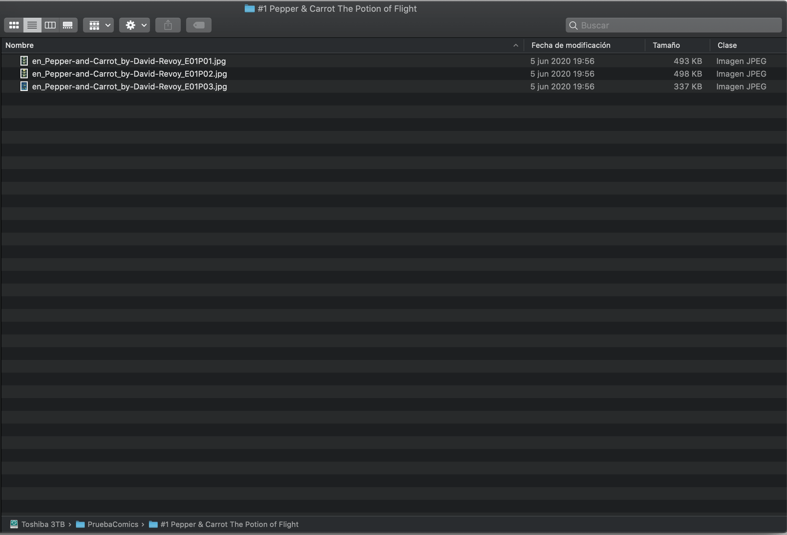
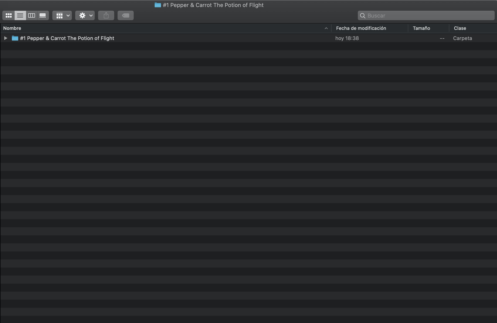

In this section we are going to comment the more common issues and how to solve them:
If the aplication returns an alert with the invalid files information it can be because multiple issues with your
files.
Keep reading for more information:
Be sure the compress file is using a valid compression format and includes the correct extension. The only valid
extension are
.cbz files, cbr files and cb7 files. Also be sure the decompress folder follow the next structure:
The root folder contains the name of the comic and inside this root folder you have directly the pages of the
comic.
To check this, you can decompress your cbz,cbr or cb7 file using Keka
Here's an image with a correct structure:

And here's one with a bad structure:

Be sure that the name of the comic is the same as the root folder.
Once you have a comic with the correct structure, you can compress the comic using a diferent format, the best
format for our app is
the cbz file.
To compress a comic with cbz format, select the root folder of your comic and compress it them
to zip format. Then change the file extension
from zip to cbz and then send it to your device.
Once common issue is to have a comic name with a different name than the original one.
Decompress your commic using Keka and be sure that the name of the comic is the same as the root folder.
For example, if the name of the comic is MySuperComic.cbz. When you decompress the file, the root folder should be MySuperComic.
If the root folder has another name, please change it and compress again the folder to zip, and then change the file extension to cbz.
Example: MySuperComicRenamed.zip -> MySuperComicRenamed.cbz
If you have a comic and the cover is not the image that you see in the collection view, please follow the next steps:
Decompress the file
Open the root folder and check if the cover is the first image if you order the content by name
If not, change the name of the cover to be the first in the folder
Compress again the folder to zip, and then change the file extension to cbz.